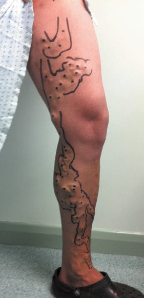
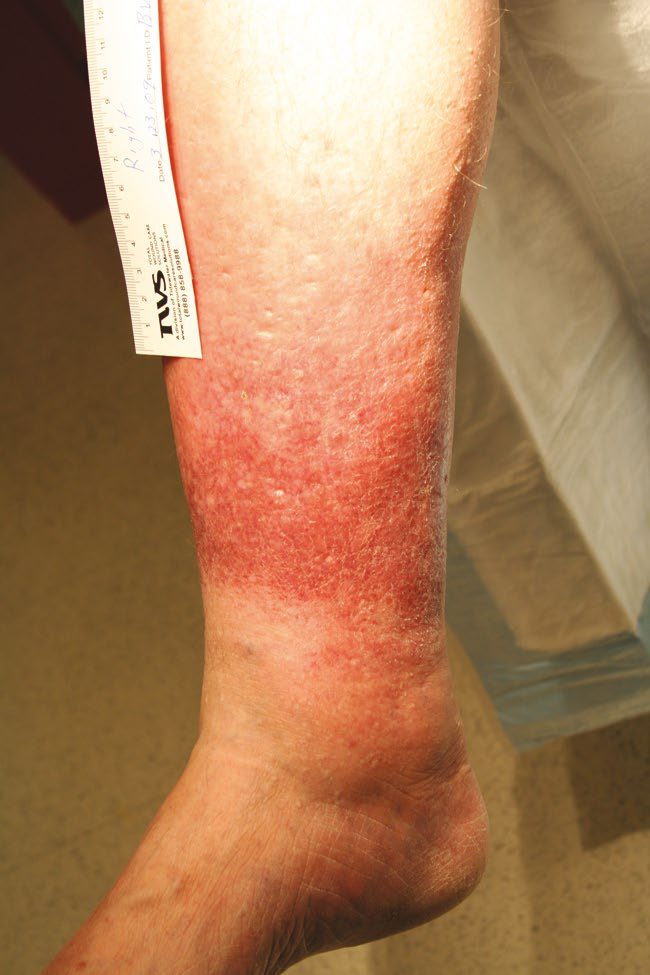
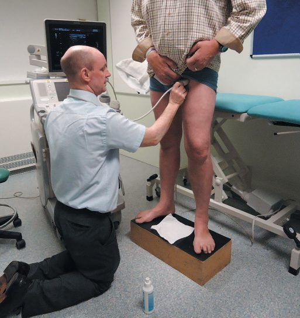
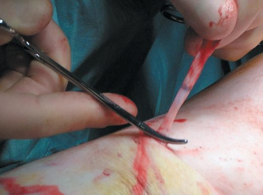
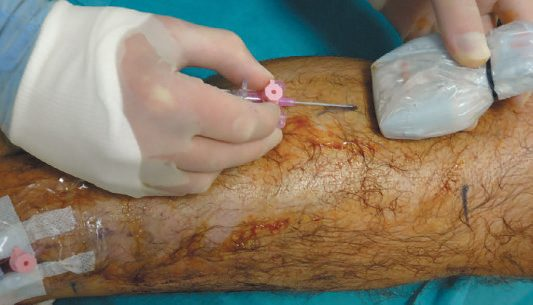
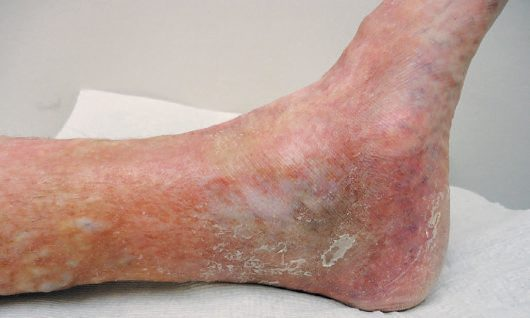

Varicose Veins
Summary
- Varicose veins are tortuous, dilated subcutaneous veins associated with valvular incompetence, affecting an estimated 30–50% of the adult population [1][2].
- They arise from chronic venous hypertension due to valvular reflux and/or venous obstruction, most often affecting the great saphenous vein (GSV, ~60% of cases) or small saphenous vein (SSV, ~20%) [1].
- Management ranges from conservative measures and compression to endovenous ablation or surgical stripping, guided by duplex ultrasound assessment and the CEAP classification system [1][2].
UK practice is set by NICE CG168, Varicose veins: diagnosis and management (2013) and its quality standard QS67 [3]. CG168 is short, four sections covering information, referral, assessment and treatment in a vascular service, and management in pregnancy, but it is unusually prescriptive about who must be referred and about the order in which treatments are offered, and both diverge from what the textbooks describe.
- CG168 defines a vascular service as a team of healthcare professionals with the skills to undertake a full clinical and duplex ultrasound assessment and to provide a full range of treatment [3].
- The information a patient must receive at presentation includes an explanation of what varicose veins are, their possible causes, the likelihood of progression and possible complications (deep vein thrombosis, skin changes, leg ulcers, bleeding and thrombophlebitis) while addressing any misconceptions the person may have about those risks, the treatment options including the role of compression, and advice on weight loss, light to moderate physical activity, avoiding aggravating factors, and when and where to seek further help [3].
- At the vascular service the patient must additionally be told that new varicose veins may develop after treatment, that more than one session may be needed, and that the chance of recurrence after treatment for recurrent varicose veins is higher than for primary varicose veins [3].
Definition
- A varicose vein is a subcutaneous dilated vein 3 mm or larger in diameter, frequently elongated and tortuous with intermittent "blowouts," defined by the presence of reflux [1].
- Related entities include telangiectasia (thread/spider veins, intradermal venules <1 mm), reticular veins (small dilated bluish subdermal veins 1–2.9 mm), saphena varix (a usually painless groin swelling apparent on standing, from dilation at the saphenofemoral junction), and corona phlebectatica (a fan-shaped pattern of telangiectasia at the ankle/foot, an early sign of advanced venous disease) [1].
- The venous system of the leg comprises three groups: superficial (great and small saphenous systems and tributaries), deep (following the major arteries between muscle compartments), and perforators (connecting superficial and deep systems, containing one-way valves) [2].
Pathophysiology
- Varicose veins develop through a process of venous wall compliance loss, dilatation, elongation (causing tortuosity) and secondary valvular dysfunction, which can be initiated anywhere in the venous tree [1].
- Venous reflux through incompetent valves is the main pathogenic factor underlying chronic venous insufficiency (CVI), though obstruction from intrinsic narrowing, post-thrombotic scarring, or external compression may also cause venous hypertension, and reflux and obstruction often coexist after venous thrombosis [4].
- Two sources of venous hypertension exist: hydrostatic pressure (the gravitational weight of the blood column, highest at the ankle/foot) and dynamic pressure (muscle contraction pressures of 150–200 mmHg transmitted to the superficial system via a failed perforating vein, causing dilation and lengthening) [4].
- If the saphenofemoral valve becomes incompetent, blood refluxes distally through progressively incompetent valves and is recycled via perforators back to the deep system, producing sustained ambulatory venous hypertension [4].
- This blood-flow-driven process activates leukocytes, which adhere to endothelium via ICAM-1, VCAM-1 and selectins, infiltrate the venous wall, and release matrix metallopeptidases (MMP1, MMP2, MMP9), degrading the extracellular matrix; decreased elastin and an altered collagen I:III ratio lead to loss of wall integrity, dilation and tortuosity [4].
- Anatomically, the GSV is supported by a well-developed medial fibromuscular layer and fibrous connective tissue binding it to deep fascia, whereas SSV tributaries are less supported and contain less muscle, making them selectively prone to becoming varicose [4].
- Secondary varicose veins may develop in post-thrombotic limbs or with congenital abnormalities such as Klippel-Trénaunay syndrome or multiple arteriovenous fistulae [1].
Venous anatomy and the skin as target organ
The great saphenous vein runs from the dorsal pedal arch anterior to the medial malleolus to enter the common femoral about 4 cm inferolateral to the pubic tubercle, accompanied by the saphenous nerve from ankle to knee; the small saphenous ascends the posterior calf with the sural nerve to pierce the popliteal fossa between the gastrocnemius heads, its termination variable with a Giacomini extension to the deep femoral or great saphenous; paired tibial veins form the popliteal, which becomes the femoral through the adductor hiatus and joins the deep femoral to form the common femoral; clinically important perforators are the posterior tibial (Cockett) perforators draining the medial leg via the posterior accessory great saphenous (posterior arch) vein (connecting the three ankle perforators implicated in venous ulcer) the paratibial (Boyd) perforators 10 cm below the knee and 1–2 cm medial to the tibia, and the femoral canal (Hunter's and Dodd's) perforators [5]. Chronic venous insufficiency, from reflux, obstruction or both (reflux dominant, severe cases usually combining both), targets the skin: proteinaceous capillary exudate, pericapillary fibrin cuffs limiting nutrient exchange, white cell trapping in the microcirculation with lysosomal enzyme release, fibrosis and fat necrosis (lipodermatosclerosis), haemosiderin from extravasated red cells producing pigmentation, and ulceration typically about 3 cm above the medial malleolus in the gaiter area; varicose veins affect at least 10% of the population (risk factors obesity, female sex, inactivity, family history), primary from intrinsic wall abnormality and secondary from deep or superficial insufficiency, and severe insufficiency need not be accompanied by varices [5].
Clinical features
- Patients describe aching, heaviness, throbbing, burning or bursting over affected areas, typically worsening throughout the day or with prolonged standing and relieved by elevation or compression hosiery [1].
- Symptoms are independent of the degree of venous incompetence or the presence of complications (short of ulceration), and can significantly impair quality of life [1].
- Cutaneous burning (venous neuropathy) and pruritus (from haemosiderin deposition) occur in advanced disease; venous claudication (cramping pain during/after exercise, relieved by rest and elevation) reflects venous outflow obstruction, often from prior DVT or May-Thurner syndrome [4].
- Signs include tortuous, dilated subcutaneous veins in the distribution of the GSV (medial thigh/calf) or SSV (posterolateral calf); a saphena varix presents as a painless groin lump, emergent on standing and disappearing when recumbent, and may show a cough impulse mimicking a hernia [1].
- Chronic venous hypertension produces a spectrum of skin changes: oedema, eczema (erythematous dermatitis, occasionally blistering/weeping), pigmentation (haemosiderosis, brownish discoloration around the ankle), lipodermatosclerosis (chronic inflammation and fibrosis causing a tight, "woody" leg, occasionally with Achilles tendon contracture), atrophie blanche (localised atrophic white skin), and venous ulceration (full-thickness skin loss, usually peri-malleolar) [1].
- Multiparous women may report pelvic congestion syndrome, leg varicosities with chronic pelvic pain, bladder fullness on standing, and dyspareunia [4].
Patients complain of unsightliness, aching, heaviness, pruritus and early fatigue worsened by standing and sitting and relieved by elevation above the heart, with mild oedema and, when severe, thrombophlebitis, pigmentation, lipodermatosclerosis, ulceration and bleeding from attenuated clusters; signs of superficial abnormality are tortuosity, varicosity, venous saccules, distended subdermal venules (corona phlebectatica), intradermal spider angiomata and the warmth, erythema and tenderness of thrombophlebitis, superficial veins looking large in the lean athlete and hidden in the obese; chronic venous ulcers cause severe pain in 65%, reduced mobility in 81% and impaired work in 100%, costing 2 million lost workdays and about $1 billion a year in the United States, where 600,000 people have chronic venous insufficiency [5]. The historic Trendelenburg test elevates the leg to 45°, occludes the great saphenous by hand or tourniquet and stands the patient: sudden filling with the saphenous still occluded indicates incompetent perforator and deep veins, rapid filling on release indicates saphenous incompetence, and gradual arterial filling is normal, now supplanted by duplex [5].


Aetiology
- Varicose veins may be primary (idiopathic, the majority), congenital, or acquired secondary to pelvic masses (pregnancy, uterine fibroids, ovarian mass, pelvic tumour), pelvic venous abnormalities (after pelvic surgery/irradiation, previous iliofemoral DVT), proximal venous obstruction, valve destruction by prior DVT, or high-flow states such as arteriovenous fistula [2][6].
- Risk factors include advancing age (prevalence of trunk varicosities rises from 11.5% at age 18–24 to 55.7% at age 55–64 in the Edinburgh Vein Study), female sex, multiparity/pregnancy, heredity/family history, obesity, height, and previous limb trauma; occupation/prolonged standing and smoking show inconclusive evidence [1][4].
- Progesterone-mediated smooth muscle relaxation and estrogen-mediated collagen softening influence venous distensibility, explaining the onset of varicosities in pregnancy and symptom fluctuation across the menstrual cycle; autosomal dominant inheritance has been identified as a genetic risk factor [4].
Lymphoedema, the great mimic of venous insufficiency
- Lymphoedema, swelling from reduced lymphatic transport through hypoplasia, functional insufficiency or absent valves, is classified after Allen as primary (congenital, before age 2, single or multiple limbs, genitalia or face, with Turner, Milroy and Klippel–Trénaunay–Weber syndromes; praecox, 94% of primary cases, women 10:1, onset in childhood or adolescence in foot and calf; tarda, under 10%, after 35) or, far more commonly, secondary to obstruction or disruption, axillary dissection the leading US cause, with radiotherapy, trauma, infection and malignancy, and globally filariasis (Wuchereria bancrofti, Brugia malayi and timori) and podoconiosis from volcanic soil in barefoot populations [5].
- Patients describe heaviness and fatigue, the limb enlarging through the day and never fully normalising overnight, with dorsal foot swelling, squared-off toes, later hyperkeratosis and weeping lymph vesicles, and recurrent cellulitis that further damages lymphatics; venous insufficiency is distinguished by gaiter lipodermatosclerosis, ulcer and varices, and bilateral pitting oedema by heart, renal or hypoproteinaemic disease; diagnosis is clinical, duplex excludes coexisting thrombosis or reflux, lymphoscintigraphy with interdigital technetium sulphur colloid (normally reaching the groin in 15–60 minutes and pelvic nodes by 3 hours) shows delayed or absent transport, cutaneous collaterals or focal gaps after dissection or radiation, and oil-contrast lymphangiography through a 27–30-gauge cannula is reserved for lymphangiectasia, fistula or planned microvascular reconstruction [5].
- There is no cure: 20–60 mmHg graded stockings worn during waking hours and replaced every 6 months maintain circumference and protect against trauma, elevation is an adjunct rather than the mainstay, intermittent pneumatic compression at 30–60 mmHg for 4–6 hours a day reduces volume but must be followed by stockings because proteins are not cleared, Vodder's manual lymphatic drainage with stockings reduces oedema and infections, cellulitis (staphylococci and β-haemolytic streptococci, often via tinea pedis) is treated at first sign with 5 days of penicillin or an anti-streptococcal cephalosporin plus elevation and compression, recurrent cellulitis is suppressed with monthly benzathine penicillin 1.2 MU, erythromycin 250 mg twice daily or penicillin V 1 g daily, and excisional debulking or lymphaticolymphatic and lymphaticovenous microsurgery lack long-term data and may obliterate remaining channels [5].
Diagnosis
- Duplex ultrasound scanning is recommended for all patients with varicose veins prior to any intervention, using a high-frequency linear array transducer (7.5–13 MHz) to define venous anatomy and reflux, allowing a bespoke treatment plan [1].
- Tourniquet tests and hand-held Doppler have largely been abandoned in favour of duplex [1], although the Trendelenburg test (tourniquet applied at different thigh/knee levels with the leg elevated then the patient standing, observing venous filling on tourniquet release) remains described for assessing competence of the saphenofemoral junction (SFJ), mid-thigh perforators (MTP) and saphenopopliteal junction (SPJ) [2].
- Colour duplex is used for all patients or selectively for recurrent varicose veins, suspected SSV reflux, known/suspected previous DVT, or mismatch between clinical examination and hand-held Doppler findings [2].
- Examination assesses for oedema, eczema, ulcers (usually medial calf), lipodermatosclerosis, atrophie blanche, and healed ulceration, and includes standing inspection for cough impulse, thrill, or saphenovarix at the SFJ [2].
- Duplex is the gold standard, performed standing with the leg non-weight-bearing and pneumatic cuffs on thigh, calf and forefoot inflated for 3 seconds then rapidly released: 95% of normal valves close within 0.5 second, so reflux over 0.5 second is abnormal, examined in common femoral, femoral, popliteal and posterior tibial veins and both saphenous trunks so that individual segments can be targeted [5].
- Older measures: ambulatory venous pressure via a dorsal foot vein after 10 tiptoes (venous ulcer in 80% when above 80 mmHg) and venous recovery time to 90% of baseline (normal 20–60 seconds; under 20 indicates significant reflux, persisting under a 50 mmHg thigh tourniquet implying deep as well as superficial reflux); photoplethysmography with an infrared diode above the medial malleolus shortens recovery time in insufficiency but cannot localise reflux or assess the pump; air plethysmography yields a venous filling index (reflux), ejection fraction after one tiptoe (calf pump) and residual volume fraction after ten (overall function), theoretically selecting high-filling-index, normal-ejection patients for anti-reflux surgery; venography and intravascular ultrasound are adjuncts for planning, IVUS being more sensitive than venography for iliac obstruction [5].
- Before treating an ulcer the venous diagnosis is confirmed, arterial insufficiency excluded clinically or by non-invasive tests, medications and comorbidities reviewed, and diabetes, immunosuppression, malnutrition and heart failure optimised [5].

Scoring and Severity
- The CEAP (Clinical–aEtiology–Anatomy–Pathophysiology) classification is the widely used descriptive system for chronic venous disorders [1].
- Clinical classification: C0 no signs of venous disease; C1 telangiectasia/reticular veins; C2 varicose veins; C3 oedema; C4a pigmentation/eczema; C4b lipodermatosclerosis/atrophie blanche; C4c corona phlebectatica; C5 healed venous ulcer; C6 active venous ulcer, further qualified as symptomatic (s), asymptomatic (a), or recurrent (r) [1].
- Aetiological classification: Ec congenital, Ep primary, Es secondary (post-thrombotic), En no venous cause identified.
- Anatomical classification: As superficial veins, Ap perforator veins, Ad deep veins, An no venous location identified.
- Pathophysiological classification: Pr reflux, Po obstruction, Pr,o both, Pn none identifiable [1].
- Compression hosiery is similarly graded by ankle pressure: Class I <25 mmHg (prophylaxis); Class II 25–35 mmHg (marked varicose veins and CVI); Class III 35–45 mmHg (CVI); Class IV 45–60 mmHg (lymphoedema) [2].
Treatment and Management
- Medical/conservative options include compression stockings, and sclerotherapy, microsclerotherapy or laser sclerotherapy for thread/reticular veins, foam sclerotherapy for truncal and varicose veins [2].
- A trial of compression hosiery can help confirm whether symptoms are truly venous in origin, as venous symptoms typically show benefit [1].
- Indications for intervention include cosmesis, symptom control, and prevention/reduction of recurrent complications; maximal benefit from ablation is seen in uncomplicated symptomatic varicose veins, as skin changes and associated morbidity are often irreversible once established [1][2].
- For chronic venous insufficiency with ulceration, four-layer (Charing Cross) compression bandaging achieves up to 75% ulcer healing at 12 weeks, provided ABPI is >0.85; graduated compression hosiery is used once ulcers have healed [2].
- Superficial (suppurative) thrombophlebitis is treated with NSAIDs and warm packs/ambulation; superficial vein thrombosis (SVT) not within 1 cm of the SFJ is managed with compression and an anti-inflammatory (e.g., indomethacin); LMWH and NSAIDs both reduce SVT extension/recurrence [7][8].
- SVT extending to within 1 cm of the SFJ carries a higher risk of extension into the common femoral vein; in these patients, 6 weeks of anticoagulation and GSV ligation are equally effective at preventing deep venous extension [8].
The referral criteria are the most examinable part of CG168, and the two-week ulcer definition is the detail usually missed [3]:
| Presentation | Referral |
|---|---|
| Bleeding varicose veins | Refer to a vascular service immediately |
| Symptomatic primary or recurrent varicose veins, veins found with troublesome lower limb symptoms, typically pain, aching, discomfort, swelling, heaviness and itching | Refer to a vascular service |
| Lower-limb skin changes, such as pigmentation or eczema, thought to be caused by chronic venous insufficiency | Refer to a vascular service |
| Superficial vein thrombosis (hard, painful veins) with suspected venous incompetence | Refer to a vascular service |
| A venous leg ulcer, defined as a break in the skin below the knee that has not healed within 2 weeks | Refer to a vascular service |
| A healed venous leg ulcer | Refer to a vascular service |
Table reformats the CG168 referral criteria [3]. Note that a healed ulcer is as much an indication for referral as an open one.
Duplex ultrasound is used for everyone, not selectively. Use duplex ultrasound to confirm the diagnosis and the extent of truncal reflux, and to plan treatment, in people with suspected primary or recurrent varicose veins [3].
The treatment order is a strict hierarchy, and open surgery is third-line [3]:
| Rank | Treatment |
|---|---|
| 1 | Offer endothermal ablation |
| 2 | If endothermal ablation is unsuitable, offer ultrasound-guided foam sclerotherapy |
| 3 | If foam sclerotherapy is unsuitable, offer surgery |
Table reformats the CG168 treatment hierarchy [3]. Where incompetent varicose tributaries are to be treated, consider treating them at the same time [3]. That ordering places conventional saphenofemoral ligation and stripping (the operation the textbooks describe in most detail) last rather than first.
Two recommendations restrict compression, and both cut against common practice. Do not offer compression hosiery to treat varicose veins unless interventional treatment is unsuitable [3]. And if compression bandaging or hosiery is offered after interventional treatment, do not use it for more than 7 days [3].
In pregnancy, intervention is essentially barred. Do not carry out interventional treatment for varicose veins during pregnancy other than in exceptional circumstances; give pregnant women information on the effect of pregnancy on varicose veins, and consider compression hosiery for symptom relief of leg swelling [3].
Compression, sclerotherapy and skin substitutes
- Elastic stockings of 20–30, 30–40 or 40–50 mmHg from knee to waist length covering the symptomatic varices relieve many patients; intervention is warranted for cosmesis, symptoms unrelieved by compression, lipodermatosclerosis or ulcer, and randomised trials show better quality of life after intervention [5].
- Sclerotherapy destroys endothelium with hypertonic saline (11.7–23.4%), sodium tetradecyl sulphate (0.125–0.25%) or polidocanol (0.5%) for telangiectasia and stronger solutions (23.4% saline, 0.5–1% tetradecyl, 0.75–1% polidocanol) for larger varices, followed by continuous bandaging for 3–5 days to appose the inflamed walls and stockings for at least 2 weeks; complications are allergy, hyperpigmentation, thrombophlebitis, DVT and skin necrosis; foam sclerotherapy beat placebo for symptoms and appearance in a randomised trial, and non-thermal mechanochemical ablation and cyanoacrylate adhesive show early promise [5].
- Compression is the mainstay of chronic venous insufficiency, elastic stockings, Unna's paste boot, multilayer wraps and pneumatic devices, inelastic bandages giving higher and longer pressure, acting through microcirculatory improvement, raised subcutaneous pressure counteracting Starling forces and lower metalloproteinases and cytokines; 30–40 mmHg below-knee stockings healed 93% of 113 ulcers (97% of compliant versus 55% of non-compliant patients, mean 5 months) with 5-year recurrence of 29% in the compliant and 100% at 3 years in the non-compliant, and improved symptom scores at 1 and 16 months in 112 patients, compliance being helped by graded introduction, silk liners, Velcro devices, zippered stockings and metal fitting aids [5].
- Unna's boot (Paul Gerson Unna) is a three-layer dressing of gauze impregnated with calamine, zinc oxide, glycerin, sorbitol, gelatin and magnesium aluminium silicate, gauze and elastic wrap, applied from forefoot to below the knee and changed weekly, which stiffens to prevent oedema but is bulky, hides the ulcer, is operator-dependent and causes contact dermatitis; it healed 73% of ulcers in 998 patients over 15 years (median 9 weeks) and 94.7% versus 41.2% against foam dressing at 12 months, and a Cochrane review of 39 trials found compression beats none, multicomponent beats single-component and elastic-containing multicomponent systems beat inelastic ones; adjustable multi-band legging orthoses match Unna's boot and can be applied by the patient [5].
- Apligraf, a bilayered living skin construct of keratinocyte epidermis over fibroblast-collagen dermis 0.5–1 mm thick supplied on agarose and used within 5 days, healed 63% versus 49% of ulcers at 6 months with multilayer compression (median closure 61 versus 181 days), benefiting most ulcers over 1000 mm² or older than 6 months, without rejection but at high cost [5].
Surgeries
- Surgical options include local "stab" avulsions for varicosities, great or small saphenous vein stripping, thermal ablation (endovenous laser ablation or radiofrequency ablation), and non-tumescent, non-thermal techniques (mechanochemical ablation or cyanoacrylate glue) [2].
- Great saphenous vein stripping is used for saphenofemoral valve incompetence, and perforator ligation (stab avulsion technique) is used when isolated perforator valves are incompetent, reserved for severe symptoms or recurrent ulceration despite medical treatment [7].
- DVT, venous outflow obstruction, and pregnancy are contraindications to vein stripping [7].
- For chronic venous ulceration, surgery includes ulcer bed clearance (physical, chemical, larval, or vacuum debridement), skin grafting (split-skin or pinch grafts), and surgery limited to superficial venous disease (as for varicose veins); the role of surgery in mixed superficial and deep venous disease is controversial, and arterial revascularisation may be needed in mixed arterial-venous disease [2].


Ablation, stripping, perforator surgery and deep venous reconstruction
- Endovenous laser or radiofrequency ablation punctures the distal thigh or proximal calf great saphenous with a 21-gauge needle under ultrasound, advances the fibre or catheter to just short of the saphenofemoral junction, infiltrates tumescent anaesthetic and treats on withdrawal, matching surgery for recurrence and severity scores with faster recovery, risking DVT, bruising and saphenous nerve injury; ligation and stripping through small groin and below-knee incisions with a blunt catheter or invagination pin stripper remains preferred for trunks over 2 cm, causes ecchymosis, haematoma, lymphocele, DVT, infection and saphenous nerve injury, and gives less recurrence and better quality of life than junction ligation alone; stab avulsions use 2 mm incisions with the vein dissected as far as possible and simply avulsed, bleeding controlled by elevation, compression and tumescence [5].
- Linton's 1938 open perforator ligation was abandoned for wound complications; subfascial endoscopic perforator surgery (SEPS) uses preoperative duplex to confirm deep competence and map posterior-compartment perforators, elevation to 45–60° with Esmarch exsanguination and a thigh tourniquet (also preventing air embolism during CO₂ insufflation), two proximal medial incisions away from ankle induration, laparoscopic trocars, subfascial dissection and double clipping, then 5 days of compression; the North American registry healed 88% of ulcers at 1 year with 72% adjunctive stripping and predicted recurrence of 16% at 1 and 28% at 2 years, an aggregate of 2059 limbs healed 90% with 0–16% complications, but the European trial showed no advantage over superficial surgery and compression, so SEPS has fallen from favour in preference to sclerotherapy [5].
- The UK ESCHAR trial found superficial venous surgery added nothing to compression for ulcer healing but significantly cut recurrence at 4 years, so saphenous ablation or removal is offered with compression for abnormal saphenous veins and severe insufficiency; deep valve repair by internal suture succeeds long-term in 60–80% though 40–50% of ulcer patients still have persistent or recurrent ulcers, axillary or brachial valve transplantation and vein transposition start similarly but develop incompetence, intimal hyperplasia and cusp thrombosis, and such reconstruction is now rare; iliac vein stenoses shown by IVUS are found in a high proportion of patients with oedema, lipodermatosclerosis or ulcer and can be stented with near-100% technical success and excellent 4-year patency with favourable retrospective effects on healing, symptoms and quality of life, still under investigation as a stand-alone treatment [5].
Complications
Complications of varicose veins themselves include superficial vein thrombosis (thrombophlebitis) and bleeding (acute), and eczema, lipodermatosclerosis, or ulceration (chronic) [1][2]. Complications of intervention include bruising (virtually universal), recurrence (about 50% of cases at 10 years), haemorrhage (minor, or rarely major from damage to the femoral vein), phlebitis after endovenous procedures, wound infection (most often in the groin), saphenous or sural nerve damage with paraesthesiae (about 20% numbness, 1% dysaesthesia), rare damage to major arteries (e.g., femoral), and thromboembolism [2].

Prognosis
- Recurrence after intervention occurs in approximately 50% of cases at 10 years [2].
- Symptomatic improvement and quality-of-life benefit are greatest in patients with uncomplicated symptomatic varicose veins treated before skin changes become established, as established skin changes and a proportion of associated morbidity are often irreversible [1].
- Four-layer compression bandaging achieves up to 75% healing of venous ulcers at 12 weeks in patients with adequate arterial supply (ABPI >0.85) [2].
References
- Bailey & Love's Short Practice of Surgery, 28th ed., Ch. 62 Venous disorders
- Oxford Handbook of Clinical Surgery, 5th ed., Ch. 19 Peripheral vascular disease, Varicose veins
- NICE Clinical Guideline CG168: Varicose veins — diagnosis and management (2013), 1.1.1; 1.1.2; 1.2.1; 1.2.2; 1.3.1; 1.3.2; 1.3.3; 1.3.4; 1.4.1; 1.4.2; 1.4.3; Recommendations www.nice.org.uk
- Sabiston Textbook of Surgery, 22nd ed., Ch. 108 Venous Disease
- Schwartz's Principles of Surgery, 11th ed., Ch. 24, Venous and Lymphatic Disease
- Browse's Introduction to the Symptoms and Signs of Surgical Disease, 6th ed., Ch. 10 The arteries, veins and lymphatics
- The ABSITE Review, 2022, section on venous disease
- Schwartz's Principles of Surgery: ABSITE and Board Review, Ch. 24 Venous and Lymphatic Disease